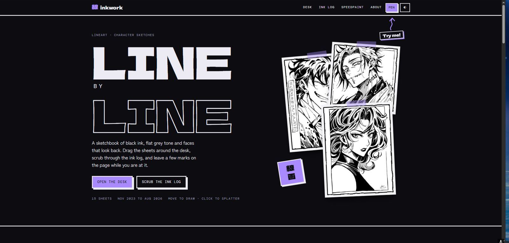
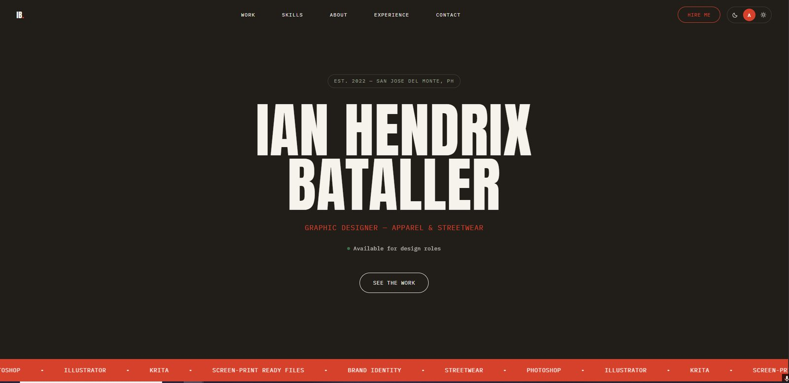

Open site ↗Drawing
Inkwork Sketchbook
My black-ink lineart and character sketches. On the site you can drag the sketches around a virtual desk, scrub through them by date, and watch speedpaint playback.
Visit Inkwork ↗IT graduate · Graphic artist · San Jose del Monte, Philippines
I just finished my BS in Information Technology and I am looking for an entry-level IT support job. I also design graphics and use AI tools to work faster. This page links to my two portfolio websites and shows what I can do.
Websites
One for my drawing and one for my graphic design. Click a thumbnail to open the live site.

Open site ↗Drawing
My black-ink lineart and character sketches. On the site you can drag the sketches around a virtual desk, scrub through them by date, and watch speedpaint playback.
Visit Inkwork ↗
Open site ↗Design
My graphic design work, mostly apparel and streetwear. Four albums: the finished designs, brand identity, how the designs look on a real shirt, and the sketches behind them.
Visit Graphic Portfolio ↗Skills
Three areas, in plain terms.
I design graphics and prepare them as clean, accurate files for print and screen. Most of my paid work has been apparel, where one mistake in a file is repeated across a whole print run, so I check the details before anything goes out.
See it in my Graphic Portfolio ↗Coursework and projects in several languages. For my capstone I managed a four-person team building HACKPROOF, a 3D cybersecurity simulation game. I made most of its art and worked with our QA tester to reproduce, document and close bugs.
Play HACKPROOF ↗I use AI tools for research, drafting, debugging and exploring ideas. I treat what comes back as a first draft: I test it, correct it, and answer for what I send out.
Experience
Where I have worked and studied, newest first.
Prepared print-ready files to exact specifications. Worked with the design team and production staff to fix file and output problems before deadlines.
Led a four-person team through a two-year build of HACKPROOF. Passed issues to the right person and tracked each bug until it was closed.
Encoded and tracked scholar records, flagged missing documents early, and followed up with applicants in plain language.
Recognized at the school research symposium for explaining technical work clearly to a non-technical audience.
Contact
I am open to entry-level IT support roles and design projects. Email is the fastest way to reach me.